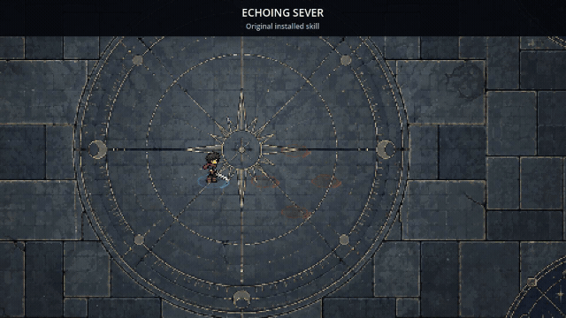
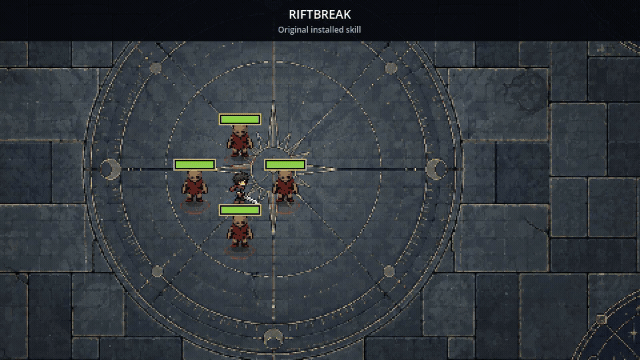
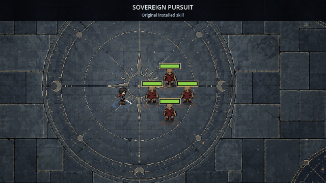
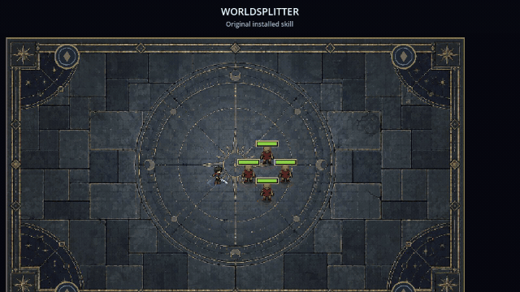
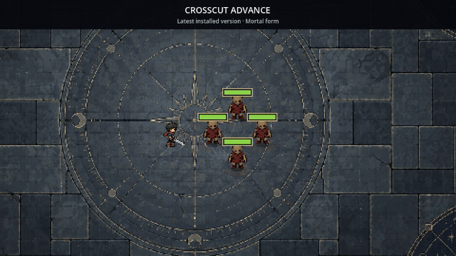
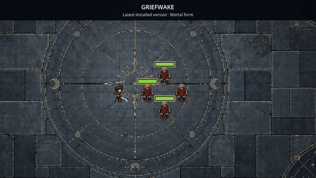
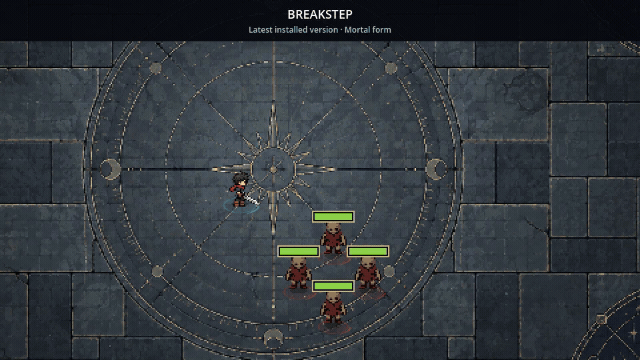
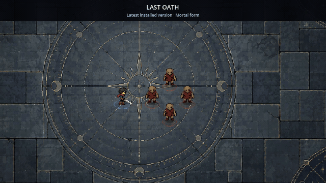
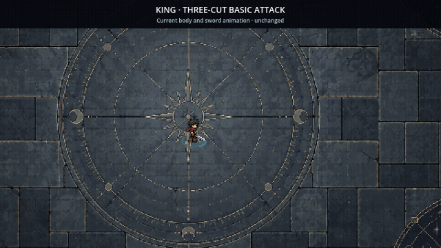
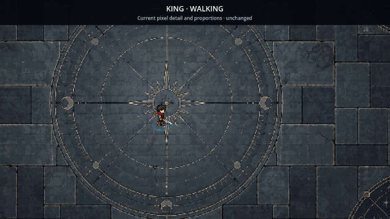

Eight currently installed skills, followed by basic attacks and walking. Original and latest versions are shown separately so you can choose which ideas deserve a place in the tier progression. No final tier assignments are implied.
These are captures of the actual game at normal speed. Latest skills use their Mortal form. Targets are stationary for readability. Worldsplitter uses a wider camera to fit its full sword. GIFs are silent; Breakstep's loop shows movement, without triggering its conditional riposte.
Echoing Sever
Original

Riftbreak
Original

Sovereign Pursuit
Original

Worldsplitter
Original

Crosscut Advance
Latest

Griefwake
Latest

Breakstep
Latest

Last Oath
Latest

Basic attack combo
Body reference

Walking reference
Body reference
